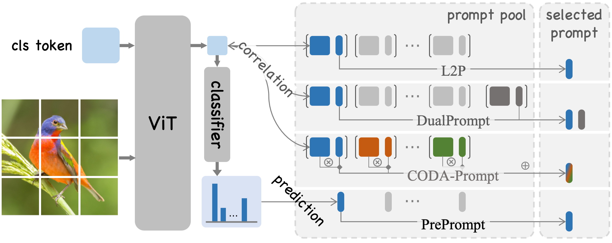
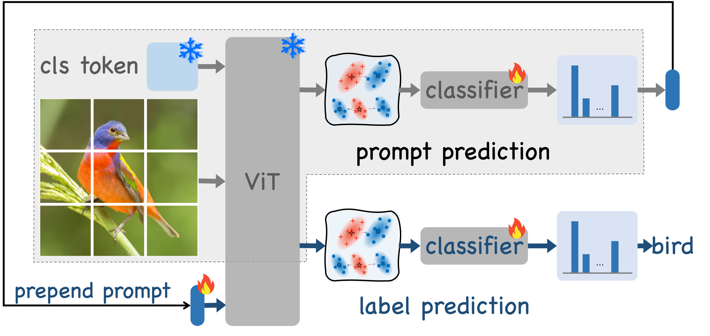
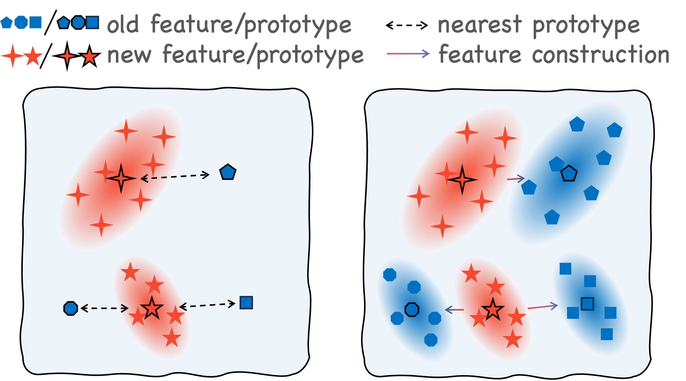
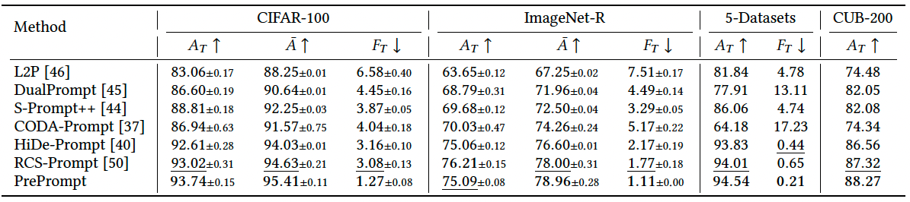

Figure 1: Comparison of existing prompt-based CIL methods and our PrePrompt.
Prompt-based learning has emerged as a promising paradigm for Class Incremental Learning (CIL), enabling pre-trained models to adapt efficiently to open-world scenarios. Existing methods often employ correlation-based strategies, where an image's feature serves as a query to retrieve the most relevant key prompts, with corresponding value prompts for training. However, these approaches face a fundamental challenge: fitting the entire feature space of all tasks with only a few trainable prompts severely limits the pre-trained model's retrieval capability.
In this paper, we propose Predictive Prompting (PrePrompt), a novel CIL framework that circumvents correlation-based limitations by leveraging the inherent classification ability of pre-trained models to predict task-specific prompts. Specifically, PrePrompt decomposes CIL into a two-stage prediction process: task-specific prompt prediction followed by a label prediction. While theoretically sound, this framework risks bias toward recent classes due to missing historical information for calibrating older classifiers. To mitigate this, PrePrompt incorporates feature extrapolation technology, dynamically balancing stability and plasticity across classifiers. Extensive experiments on several benchmarks demonstrate PrePrompt's superiority over state-of-the-art prompt-based CIL methods.

Figure 3a: The PrePrompt framework operates through two sequential prediction stages.

Figure 3b: Feature extrapolation dynamically balances stability and plasticity.
PrePrompt eliminates the need for a separate key-value structure and reduces reliance on correlation-based queries. Instead, it leverages the model's initial prediction capability to identify the most appropriate prompt for each task and subsequently predicts the final label using the selected prompt. To achieve an optimal balance between stability and plasticity, PrePrompt incorporates a feature extrapolation strategy across these two prediction stages, maintaining clear separation between corresponding classes and robust task-specific decoupling.
PrePrompt demonstrates consistent and significant superiority across all benchmarks (CIFAR-100, ImageNet-R, 5-Datasets, and CUB-200), establishing new performance standards in parameter-efficient CIL. For instance, on CIFAR-100, PrePrompt achieves a state-of-the-art final average accuracy of 93.74% while reducing catastrophic forgetting to merely 1.27%.

@inproceedings{huang2026preprompt,
title={PrePrompt: Predictive prompting for class incremental learning},
author={Libo Huang, Xiangqi Li, Jiarui Zhao, Zhulin An, Chuanguang Yang, Boyu Diao, Fei Wang, Yan Zeng, Zhifeng Hao, Yongjun Xu},
booktitle={Proceedings of the 31st ACM SIGKDD Conference on Knowledge Discovery and Data Mining (KDD)},
year={2026}
}